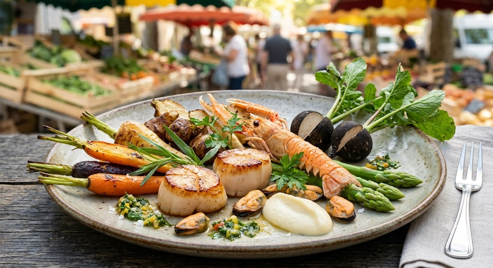
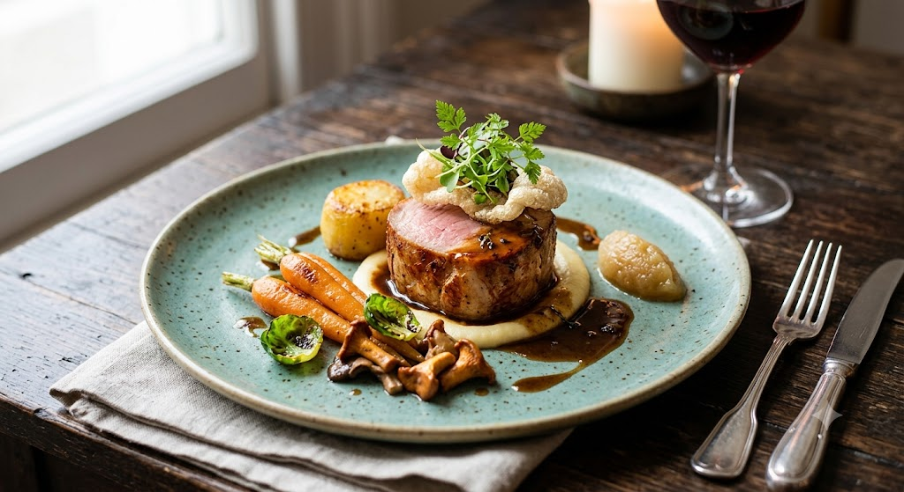
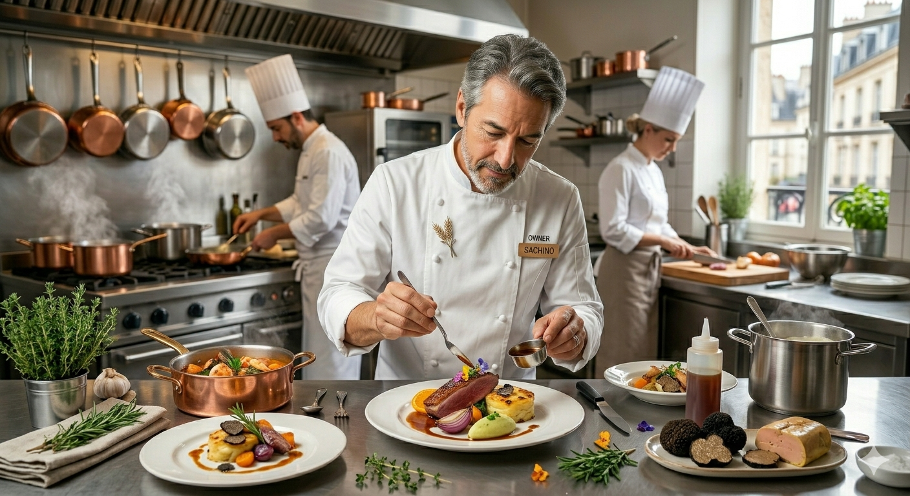

仙台銀座、大人の隠れ家。
市場直送の魚介と、力強い有機野菜。
修行を重ねた技術が織りなす、
心に響くフレンチ。

フランス料理の格式はそのままに、ビストロの親しみやすさを。丁寧に引いたダシ、力強い野菜の旨味、 そして看板の「とりば豚」。
口コミで「驚きがあった」と評される独特の味付けは、食材への深い敬意から生まれます。

実家のラーメンの製麺所で小麦の香りに包まれて育った尾関克巳。彼の料理の原点は「職人の誠実さ」にあります。
五反田〔ヌキテパ〕や銀座〔オザミデヴァファン〕。名だたる厨房で磨き上げたのは、世界に通用する洗練。しかし彼が故郷・仙台で形にしたのは、もっと人間味のある「食」でした。
「ん」という名に込めた、完結と始まり。灯火の香りと共に、一期一会の味をお届けします。
「フレンチは足りない」という常識を覆す。肉厚なとりば豚と山盛りの有機野菜で心もお腹も満たします。
マナーよりも会話を。スタッフの明るい接客で、大切な人との時間を等身大で楽しめます。
市場直送の鮮魚を、ハーブやスパイスを駆使した未体験の味付けで。リピーターが絶えない理由です。
現在、ランチタイムは大変混み合っております。確実にお席をご用意し、最高の状態で「とりば豚」を召し上がっていただくために、事前のご予約をおすすめしております。
【WEB・電話予約特典】
ご予約時に「LPを見た」とお伝えいただいたお客様には、当日入荷の「新鮮有機野菜の一品」を増量してサービスいたします。